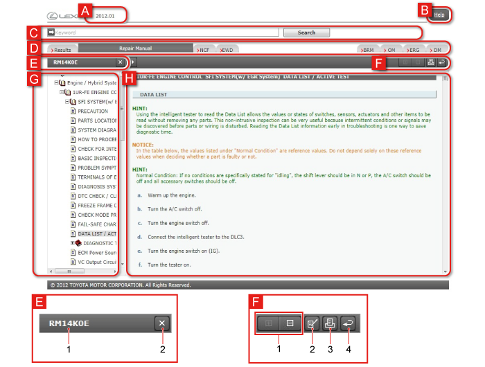
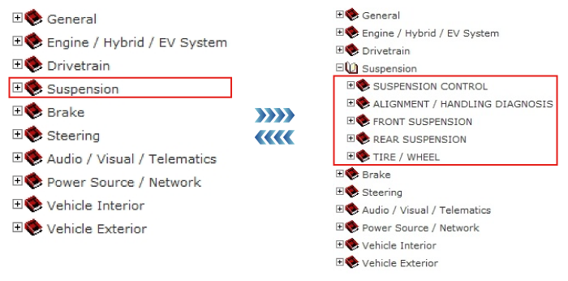

The manual (Service Information) corresponding to the applicable Production Date populated on the Top screen can be switched by clicking on the tab.
The content and structure of each manual is displayed as a tree, clearly expressing the overall volume and the stated details. Double click on the tree as a simple way to display the information you want to check.
The search field for each manual can be used for keyword searches even during manual reading.

| A | Vehicle Information Displays the Vehicle Information that was populated on the Top screen. |
||||||||||||||||||||||||||||
|---|---|---|---|---|---|---|---|---|---|---|---|---|---|---|---|---|---|---|---|---|---|---|---|---|---|---|---|---|---|
| B | Help Displays explanations of how to use this site, and its functions. |
||||||||||||||||||||||||||||
| C | Keyword search field Keywords can be input here to perform searches. |
||||||||||||||||||||||||||||
| D | Manual tabs Switch between manuals.
HINT
|
||||||||||||||||||||||||||||
| E | 1 | Pub No. Displays the Pub No. of the manual. |
|||||||||||||||||||||||||||
| 2 | Exit Closes the tree. |
||||||||||||||||||||||||||||
| 3 | Change display width Enlarges or reduces the tree display width. |
||||||||||||||||||||||||||||
| F | 1 | Display Inspection Procedure/Hide (Repair Manual only) Displays/hides detailed procedures, such as for removal, mounting and inspection. |
|||||||||||||||||||||||||||
| 2 | Print Prints the displayed details. |
||||||||||||||||||||||||||||
| 3 | Back Goes back to the previously displayed screen within each manual (up to five times). Switches between tabs to go back to another manual. |
||||||||||||||||||||||||||||
| G | Tree Contents composition is displayed as a tree. |
||||||||||||||||||||||||||||
| H | Manual display Displays the content of the manual. |
||||||||||||||||||||||||||||
Click on “+”, icon or Category to display Sections, Titles and Items. Click on “-” to close displayed Section, Titles, etc.
e.g. For a Repair Manual
